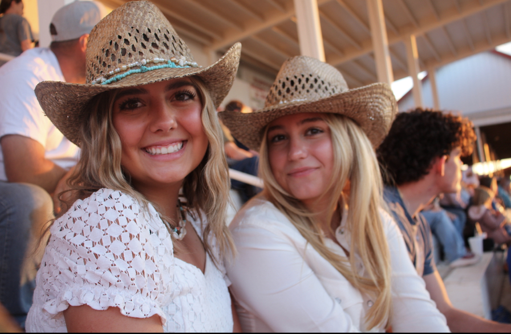

Frequently Asked Questions

Can you photograph Animals?
Of course! Animals are so much fun to photograph.
Ive worked with dogs, cats and horses, but Im open to trying new animals!
Just make sure to give me any information I might need about your animal (habits, allergies, concerns ect)

Can I bring my friend?
Yes! If it's a solo/headshots shoot you can totally bring your friends for moral support
But, if you did want any puctures with thm you would have to pay the group/couples etc fee.
Anyone is welcome to come especially if it will make you more comfortable.
.
What should I wear to my shoot?
You should wear whatever you're most confident in.
I would personally avoid wearing 100% black as it can be hard to photograph. You can also bring an outfit change as long as you think you can fit it in your payed for time of the shoot.
Make sure you dress for the weather as well!
Many High School seniors, especially girls, choose to wear white for their shoots. Its timeless and can be matched to any background. Also, many seniors choose to bring their cap and gown! I higly encourage this because you can use these photos for your grad announcement and even senior photos!